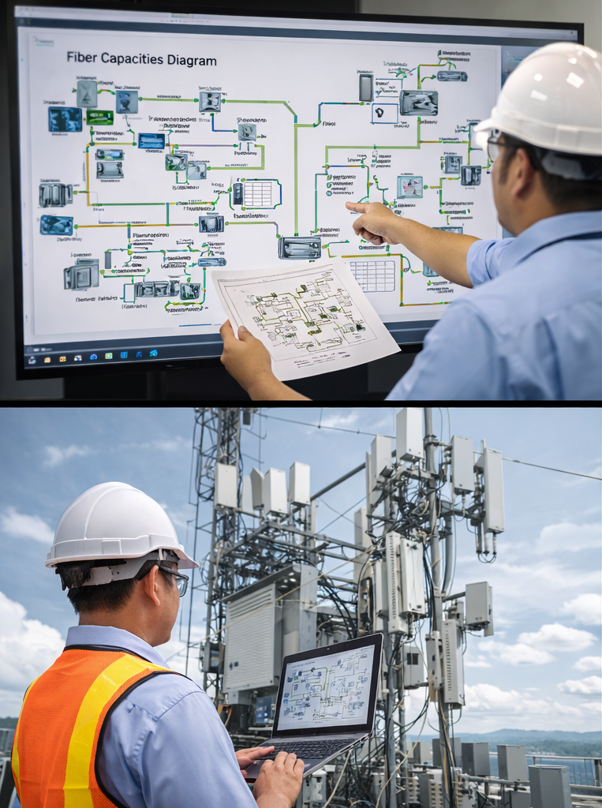

Our Core Services
1. Trading (Domestic & International)
SRRC conducts two-way trading activities across Cambodia and international markets. We specialize in sourcing, procurement and distribution of telecom equipment, industrial materials and technical products.

2. Import & Export Services
We provide full customs clearance solutions including:
• Tax and tariff handling
• Import licenses & regulatory approvals
• Product quality inspection coordination
• Documentation and compliance management

3. Logistics & Supply Chain
Integrated logistics solutions including transportation, cross-border logistics coordination and supply chain management for industrial and telecom projects.
4. Telecom Network Design
Comprehensive telecom infrastructure design including:
• FTTH (GPON & AON)
• Internet & WiFi Mesh systems
• Large building network architecture
• Inbuilding systems (IBS)

5. BTS & Infrastructure Deployment
End-to-end implementation of telecom infrastructure:
• BTS site construction
• Fiber deployment (aerial & underground)
• Civil works & tower installation
• Equipment installation & integration
6. Market Access & Business Enablement
Strategic advisory services supporting foreign enterprises entering the Cambodian market including regulatory consultation, project access and partnership facilitation.